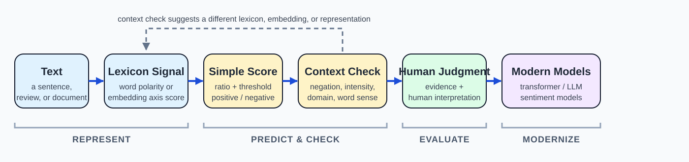

7.1 Sentiment, Affect, and Lexicons#
Module 6: Without predefined labels, can we discover meaningful structure in a collection?
Module 7: Given a piece of text, can we infer the writer’s evaluative attitude toward what it describes?
This week asks a more specific question than either discovery or classification. We are not looking for an arbitrary category, and we are not just asking what a text is about. We are asking how the writer feels about it.

Fig. 15 From Text to an Evaluated Sentiment Judgment#
A useful guiding question for this chapter:
How can we identify and interpret attitudes in text, and why is sentiment harder than simply counting positive and negative words?
Throughout this reading we will use four short movie-review snippets.
Note
“This movie is absolutely amazing. The acting is incredible and the story never slows down.”
“The acting is not bad, but the story really drags in the middle.”
“A fairly disappointing sequel. Somewhat entertaining, but nothing we haven’t seen before.”
“Totally unwatchable. The plot made no sense.”
At a glance, (1) reads clearly positive and (4) reads clearly negative. Reviews (2) and (3) are harder: each one mixes a negative-sounding word with something that softens or reverses it. By the end of this chapter you should be able to say exactly why (2) and (3) are harder.
1. What Is Sentiment Analysis Asking?#
Sentiment analysis is one way of extracting affective meaning: meaning related to emotion, mood, opinion, and evaluation, from text [JM26]. One influential typology divides affective states into several kinds: brief emotions (angry, joyful), longer-lasting moods (gloomy, cheerful), interpersonal stances taken toward another person in an interaction (cold, friendly), relatively stable personality traits (anxious, hostile), and attitudes, enduring evaluative beliefs and preferences toward an object or person (liking, valuing, disliking) [JM26].
Sentiment analysis extracts attitudes. It asks what someone likes or dislikes, based on affect-rich text such as reviews, editorials, or social media posts [JM26]. It does not try to classify every emotion, mood, or personality signal in a text. Think of it as an attitude extraction rather than a full map of human emotions.
Important
Topic analysis (Module 6): what is this text about?
Classification (Module 5): which predefined category does this text belong to?
Sentiment analysis (this module): what evaluative attitude does the writer express toward what the text is about?
Sentiment analysis is still, mechanically, a form of classification: it typically assigns a label such as positive, negative, or neutral. What makes it worth its own chapter is the kind of label it predicts and the kind of evidence it depends on, which is the subject of the rest of this chapter.
2. Polarity, Valence, and Affect#
The simplest and most common way to represent sentiment is polarity: is a word, sentence, or document positive, negative, or neutral?
A more general way to describe affect represents it along continuous dimensions rather than discrete categories. The two most common dimensions are valence, how pleasant or unpleasant something is, and arousal, the level of alertness or energy it provokes; a third, less commonly used dimension is dominance, the degree of control associated with it [JM26].
Important
Valence is the dimension that matters most for this chapter. It is a continuous version of polarity: how pleasant or unpleasant a word or text is.
The NRC Valence, Arousal, and Dominance (VAD) lexicon assigns scores on all three dimensions to 20,000 words [JM26]. A few examples make the point that these dimensions capture genuinely different things:
Word |
Valence |
Arousal |
|---|---|---|
|
.918 |
n/a |
|
.840 |
n/a |
|
n/a |
.962 |
|
.115 |
n/a |
vacation sits near the top of the valence scale (pleasant). enraged sits near the top of the arousal scale (a highly activated, and typically unpleasant, state). Valence and arousal answer different questions, how pleasant versus how activating [JM26], which is exactly why a lexicon might track them separately.
3. Sentiment Lexicons: Three Kinds of Affective Knowledge#
A sentiment lexicon (or affect lexicon) is a list of words, each annotated with some kind of affective information [JM26]. Lexicons differ in what kind of information they encode, not just in which words they include. Three examples illustrate three different kinds of affective knowledge.
A hand-built binary polarity lexicon. The lexicon of Hu and Liu (2004) lists around 2,000 positive words and nearly 4,800 negative words, drawn from product reviews [JM26]. It is one of several hand-built binary lexicons, alongside the General Inquirer and the MPQA Subjectivity lexicon, that largely agree on clearly polarized words:
Positive |
Negative |
|---|---|
|
|
This is the simplest possible lexicon design: a word is either on the positive list, the negative list, or neither.
A continuous, multi-dimensional lexicon. NRC VAD, introduced in Section 2, assigns every word a score on three separate scales instead of a single yes/no label [JM26]. It represents affect as a position in space, not a category.
A psychological-category lexicon. LIWC (Linguistic Inquiry and Word Count) organizes words into dozens of categories relevant to social-psychological analysis, not just positive and negative [JM26]. Alongside categories for positive and negative emotion, LIWC includes categories such as Insight (believe, know, think) and Negate (no, never, cannot) [JM26]. A lexicon, in other words, does not have to be about polarity at all: it can encode any aspect of meaning a researcher has chosen to annotate.
Note
These three are representative examples, not a complete catalog. Many sentiment and affect lexicons exist. What is worth remembering is the kind of knowledge each represents (binary, continuous, categorical), not a list of resource names.
4. A Simple Lexicon-Based Prediction#
Once a lexicon exists, the simplest way to use it is a rule: count the positive and negative words in a document, and let the ratio decide the label [JM26].
Important
If a document has more positive lexicon matches than negative ones, by more than some threshold, call it positive. If it has more negative matches, call it negative. Otherwise, call it neutral.
Applied to review (1), “absolutely amazing… incredible,” a lexicon match on amazing and incredible gives a clearly positive ratio. Applied to review (4), “unwatchable… no sense,” the ratio is clearly negative.
This approach needs no labeled training data and no model fitting: it is built entirely from a pre-existing word list. That makes it fast, fully interpretable (you can always point to exactly which words drove the decision), and useful as a baseline when labeled data is scarce [JM26].
Tip
Try it yourself. Run the ratio rule on review (2), “The acting is not bad, but the story really drags in the middle.” bad and drags both sound negative. Does a word-counting rule get this review’s overall tone right? Keep your answer in mind for Section 6.
5. Where Word-Level Scoring Breaks#
A ratio of positive-to-negative word matches treats a document as a bag of independent sentiment words. That assumption breaks in predictable ways: negation, intensity, domain, and word sense can all change what a word contributes to a document’s sentiment, without changing which words are present.
A real-world illustration comes from a large-scale comparison of 1-star and 5-star Yelp restaurant reviews [JM26]. The words most strongly associated with each class were not limited to obvious sentiment words:
1-star reviews used negative words (
worst,rude,terrible), but also logical negation (no,not), first-person plural pronouns (we,us,our), and nouns naming people (manager,waiter,customer).5-star reviews used positive words (
great,delicious,amazing), but also emphatics and universals (very,always,everything), second-person pronouns (you), and nouns naming restaurant qualities (atmosphere,dessert,course).
A simple positive/negative word count captures the first half of each list and misses the second half entirely, even though the second half is doing real work: it reflects how the review tells its story, a confrontation narrative versus a recommendation, not just which sentiment words appear [JM26].
The next two sections walk through the specific mechanisms behind this gap: how negation and intensity change a word’s contribution (Section 6), and how domain and word sense change a word’s baseline meaning (Section 7).
6. Context and Compositionality: Negation, Intensifiers, and Downtoners#
Negation can flip or shift a word’s polarity. One clear signal is morphological: words that share a root but differ by a negative affix, such as adequate/inadequate or thoughtful/thoughtless, tend to have opposite polarity [JM26]. The same logic applies at the sentence level: the Yelp finding from Section 5, that 1-star reviews use “no” and “not” more than 5-star reviews, is a document-level trace of exactly this effect.
Look back at review (2): “not bad” is not simply not plus bad. It reads closer to mildly positive, or at least not negative, even though bad is a strongly negative word on its own. A rule that scores bad by itself, without checking what comes before it, scores this review wrong.
Intensifiers (also called emphatics) and downtoners (also called attenuators) are adverbs that change how strongly a sentiment word should be read, without changing its direction [JM26]:
Intensifiers push a word toward the extreme:
totally,absolutely,utterly.Downtoners pull a word toward the middle:
somewhat,fairly,pretty.
Review (1) uses absolutely to intensify amazing. Review (3) uses fairly and somewhat to soften disappointing and entertaining. A rule that only checks whether a word is on a positive or negative list, without checking its neighbors, cannot tell “disappointing” from “fairly disappointing,” even though a human reader clearly can.
Important
Word-level sentiment scores cannot be added up as if each word contributed its meaning independently. Negation, intensifiers, and downtoners all change how words combine, which is exactly what a simple bag-of-words ratio (Section 4) cannot see.
7. Domain Dependence and Polysemy#
Domain dependence. A word’s polarity is not fixed across every context. One way sentiment lexicons try to stay accurate across domains is to start from different seed words for different genres of text [JM26]. A lexicon built for general text, for Twitter, and for financial text can each use their own representative seed list. The word volatile, for instance, appears as a negative seed word specifically in the finance-domain seed list, reflecting that unpredictable price swings are undesirable in that context [JM26]. A general-purpose or Twitter-domain seed list does not include volatile at all. The lesson is not really about this one word: it is that a lexicon tuned for one domain can mislabel text from another, and a sentiment system should be built, or at least checked, with its target domain in mind.
Polysemy. The same surface word can carry different sentiment depending on which sense is intended. SentiWordNet, which assigns polarity scores to individual WordNet senses rather than to whole words, makes this concrete [JM26]:
Sense |
Gloss |
Positive |
Negative |
|---|---|---|---|
|
“deserving of esteem” |
0.75 |
0 |
|
“may be computed or estimated” |
0 |
0 |
|
“of critical importance” |
0.625 |
0.125 |
|
“having a rapid onset and severe course” |
0 |
0.5 |
estimable is positive in one sense and purely neutral in another. acute is mildly positive in one sense (“acute insight”) and negative in another (“an acute illness”). A lexicon that scores the word acute once, without regard to sense, cannot represent both facts at the same time [JM26].
Note
Domain dependence and polysemy are two different reasons the same word can mean different things for sentiment: domain dependence is about where the word is used, polysemy is about which sense is intended. Both are reasons a lexicon lookup is a starting point, not a final answer.
8. Extending Lexicons with Embeddings: The Semantic-Axis Method#
Module 4 introduced embeddings and cosine similarity as a way to compare the meaning of two pieces of text [JM26]. The same tools can build or extend a sentiment lexicon, with no hand-labeling beyond a small set of seed words.
The idea, sometimes called the semantic-axis method, works in three steps [JM26]:
Choose a small set of positive seed words (for example,
good,lovely,excellent) and a small set of negative seed words (bad,horrible,unpleasant).Compute the embedding for each seed word, and average the positive seed embeddings into one positive centroid, and the negative seed embeddings into one negative centroid. The vector pointing from the negative centroid to the positive centroid is the semantic axis: a direction in embedding space that represents “more positive.”
For any new word, use cosine similarity (Module 4) to measure how closely its embedding aligns with that axis. A word whose embedding points more toward the positive centroid gets a higher sentiment score.
This directly reuses the representation and similarity tools from Module 4, just pointed at a new question: not “are these two documents similar,” but “which direction, in meaning space, does this word lean?”
Note
Seed words can also be chosen per domain. A finance-specific seed set (successful, profit, gains as positive; loss, volatile, litigation as negative) induces a lexicon tuned to financial text, directly addressing the domain-dependence problem from Section 7 [JM26].
Because this method needs only a handful of hand-chosen seed words, not a large hand-labeled lexicon, it is a practical way to build or extend sentiment coverage for a new domain or a language without an existing lexicon.
9. Beyond Binary: Scalar Sentiment and Potts Diagrams#
Sentiment is not always binary. Online reviews usually come with a star rating, 1 to 5 or 1 to 10, which gives a natural, continuous supervision signal: instead of asking whether a word is positive or negative, we can ask how a word’s frequency is distributed across every rating level [JM26].
Plotting that distribution for a word produces a Potts diagram, and the shape of the curve is informative [JM26]:
Strongly polarized words (
great,terrible) produce a J-shaped (or reverse-J-shaped) curve: the word is overwhelmingly concentrated at one end of the rating scale.Weakly polarized words produce a hump-shaped curve, concentrated in the middle of the scale rather than at either extreme.
This same shape distinguishes the intensifiers and downtoners from Section 6. Emphatic adverbs like totally and absolutely tend to produce J-shaped or U-shaped curves, appearing disproportionately in the most extreme reviews. Downtoners like somewhat and fairly produce hump-shaped curves, appearing disproportionately in reviews near the middle of the scale [JM26]. In other words, the compositional effect from Section 6, intensifiers push toward the extremes, downtoners pull toward the middle, is the same pattern a Potts diagram makes visible across an entire review corpus.
Important
Binary polarity is a useful simplification, not the full picture. Scalar sentiment captures strength, not just direction, and the J-shape versus hump-shape distinction is a concrete, visual argument for why “positive or negative” alone leaves information on the table.
10. From Lexicons to Modern Sentiment Models#
Lexicons inside supervised models. Everything so far in this chapter has used a lexicon on its own, with no labeled training data. When labeled data is available, lexicon-derived counts do not have to be thrown away: they can be added as features to a supervised classifier (Module 5), alongside ordinary word or n-gram features [JM26]. This combines human-curated sentiment knowledge with patterns the classifier learns directly from labeled data. That is the one genuinely sentiment-specific twist on the classification pipeline from Module 5; everything else there (train/dev/test splits, evaluation metrics, the classifier itself) carries over unchanged, so it is not repeated here.
What changes with transformers and LLMs. The methods in this chapter, hand-built lexicons, rule-based scoring, embedding-based lexicon induction, predate large pretrained language models. Modern sentiment systems increasingly use transformer-based classifiers or prompt a large language model directly, often with no sentiment-specific training data at all (zero-shot) [ZDL+23].
A recent evaluation across a wide range of sentiment tasks found a consistent pattern: large language models perform well in zero-shot and few-shot settings on simpler sentiment tasks, such as deciding whether a sentence is positive or negative, but they still lag behind smaller, task-specific models on tasks that require structured or fine-grained sentiment understanding, such as identifying sentiment toward one specific aspect of a product rather than the product as a whole [ZDL+23].
Important
A larger, more capable model does not make the questions in this chapter disappear. Negation, intensity, domain dependence, and word sense can still confuse a transformer or an LLM; they are just no longer handled by an explicit lexicon lookup. The deeper lesson of this chapter, that word-level and even sentence-level evidence can be ambiguous, carries forward regardless of which model produces the prediction [ZDL+23].
11. What Still Matters Regardless of Method#
Whatever system produced a sentiment judgment, lexicon-based, supervised, or a large language model, the same questions are worth asking before you trust the result:
What exactly is being predicted: polarity, a star rating, an emotion, or sentiment toward one specific aspect?
What evidence in the text supports that prediction?
Could negation change the reading?
Could an intensifier or downtoner change the strength of the reading?
Could the same word carry a different polarity in another domain, or in another sense?
Is the output binary when the underlying sentiment is actually more nuanced?
What would a simple lexicon miss here that a larger model might catch, and what might the larger model get wrong that a transparent lexicon would have gotten right?
These questions do not go away as methods improve. They are the durable skill this chapter is actually teaching: knowing what evidence a sentiment judgment rests on, and being able to say where that evidence might be incomplete.
Key Takeaways#
Sentiment analysis extracts attitudes, a specific kind of evaluative judgment, not a full map of emotion, mood, or personality.
Valence (pleasant vs. unpleasant) is the dimension most directly tied to sentiment; arousal and dominance are related but not developed further here.
Lexicons differ in kind, not just content: binary polarity lists, continuous multi-dimensional scores, and category-based lexicons each encode different information.
A simple positive/negative word ratio is a fast, interpretable baseline, and it is also easy to fool.
Negation, intensifiers, and downtoners mean sentiment words cannot be summed as if they were independent.
The same word can mean different things for sentiment depending on domain or word sense.
Embeddings and cosine similarity (Module 4) can induce or extend a sentiment lexicon from a handful of seed words, with no large hand-labeled resource required.
Sentiment does not have to be binary: scalar, rating-based sentiment captures strength as well as direction.
Transformers and LLMs change how sentiment is predicted, but they do not remove the need to ask what evidence supports a prediction and where that evidence might be incomplete.
References#
[JM26]
[ZDL+23]